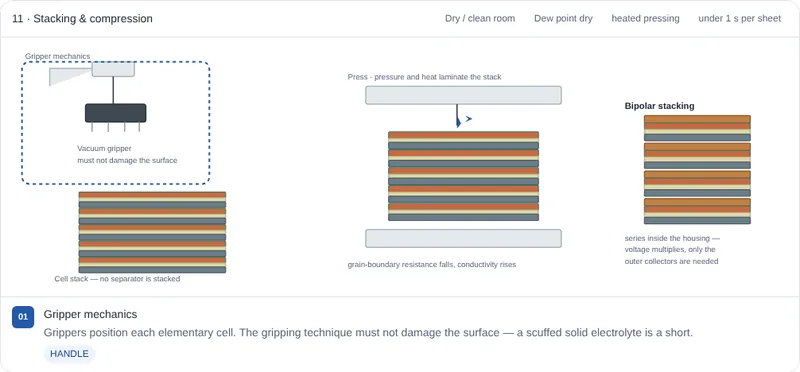

Learning objectives
By the end of this lesson you will be able to:
- explain what a solid electrolyte could offer, and what it makes harder;
- compare oxide, sulfide, halide and polymer electrolytes by conductivity, processing and atmosphere;
- name the lithium-ion production steps that disappear and the steps that take their place;
- explain why solid-state cells depend on densification and stack pressure.
Before you start: Lesson 3 · Cell production. This lesson is written as a comparison with it.
01Why go solid?
The main prize is the negative electrode. Lithium metal can store about ten times as much charge per gram as graphite — around 3,860 mAh/g against 372 mAh/g in theory — so a cell with a thin lithium-metal negative electrode could hold considerably more energy for its size and weight. In liquid electrolytes, lithium metal tends to grow needle-like deposits and to keep reacting with the liquid. A solid electrolyte is expected to suppress both, though not to eliminate them.
The second argument is safety: most solid electrolytes do not burn the way carbonate solvents do. The case is real but narrower than it sounds, because lithium metal itself is very reactive, some solid electrolytes release toxic gas when they meet moisture, and lithium can still force its way through a solid electrolyte along grain boundaries and cracks if the current is too high.
What makes it hard is contact. Two solids only touch where they are pressed together, and the electrodes swell and shrink as lithium moves in and out. Much of what changes in the factory follows from that one fact.
02Four electrolyte families
There is no single solid-state cell. The electrolyte family decides the materials, the machines and the atmosphere of the whole line:
| Family | Example | Ionic conductivity, order of magnitude | How it is made dense | Main difficulty |
|---|---|---|---|---|
| Sulfide | Li₁₀GeP₂S₁₂, Li₆PS₅Cl | about 1–10 mS/cm at room temperature, a few even higher | Soft enough to press or calender to density | Reacts with moisture, releasing toxic hydrogen sulfide |
| Oxide | Garnet Li₇La₃Zr₂O₁₂ (LLZO) | about 0.1–1 mS/cm | Sintered at high temperature | Hard and brittle; poor contact without sintering |
| Halide | Li₃InCl₆, Li₃YCl₆ | around 1 mS/cm | Pressed, like sulfides | Most are reduced by lithium metal, so that side needs a protective layer; moisture sensitivity varies |
| Polymer | PEO with LiTFSI salt | about 0.1 mS/cm, but only when warm (60–80 °C) | Melted and extruded like a plastic | Too resistive at room temperature; limited voltage window |
| Liquid, for reference | LiPF₆ in carbonates | about 10 mS/cm at room temperature | Soaks into the pores by itself | Flammable solvent |
The conductivities are typical good values for each family; record values are higher, and real cells usually reach less. Sulfides are the closest to liquids, which is why many current development programmes use them, but they need a very dry, often inert, atmosphere throughout. Oxides are chemically robust but have to be fired, and their stiffness makes contact hard. Polymers are the easiest to process — the machines resemble those for plastic film — and have been used commercially, in vehicles that keep the battery warm.
03What disappears, what appears
Compared with the conventional line in Lesson 3:
| Change | Steps | Why |
|---|---|---|
| Disappears | Electrolyte filling, wetting, and in most routes degassing | The electrolyte is already in the stack. There is no liquid to inject, no pore to soak, and little gas from liquid decomposition. |
| Appears | Making the electrolyte layer: tape casting, aerosol deposition, co-extrusion or dry coating | The separator’s job is now done by a thin layer of the electrolyte itself, which has to be made. |
| Appears | Densification: sintering, calendering or pressing | Particles must be pressed or fused together so ions can cross from one to the next. |
| Appears | Lithium metal anode: extruding and rolling lithium into thin foil, then laminating it onto the current collector | Lithium metal cannot be coated as a slurry; it is formed like a soft metal, under argon or in very dry air. |
| Changes | Stacking becomes stacking and compression | The stack is pressed so its layers touch, and often stays under pressure in use. |
| Changes | Atmosphere control | Argon or very dry air wherever lithium metal is handled; very dry or inert atmosphere throughout for sulfides. |
| Stays | Mixing, slitting, cutting, packaging, formation and aging | The cell still needs its materials prepared, cut, sealed, first charged and screened, under different conditions. |
Some designs go further and leave out the lithium metal entirely. These anode-free cells are built with only a bare current collector on the negative side, and lithium from the positive electrode is plated onto it during the first charge. That removes the hardest material-handling step, at the cost of having no spare lithium to replace what is lost.
04Route by route
Following the PEM RWTH Aachen guide to solid-state cell production, the four families share the lithium-metal anode, the slitting and cutting, the stacking with compression, the packaging, and formation and aging. In between, they diverge:
- Oxide: raw materials are ground in a ball mill and calcined into electrolyte powder, made into a slurry, cast as a tape and sintered together with the positive electrode — usually for several hours, at temperatures that the guide puts in a range of 500–1,500 °C. Alternatively the powder is sprayed on by aerosol deposition, which builds a dense layer at room temperature and needs only mild heating afterwards.
- Sulfide: powders are mixed in inert gas or a dry room, formed into layers by tape casting from a slurry or by solvent-free dry coating, and densified by calendering or by isostatic pressing, which squeezes the stack evenly from all sides. The softness of sulfides lets pressure do what heat does for oxides.
- Halide: similar to sulfide — grinding, mixing, tape casting and calendering — with handling conditions set by the specific halide.
- Polymer: the positive-electrode mix and the electrolyte are each melted and mixed in twin-screw extruders, then co-extruded together into a bonded composite film and calendered warm. No solvent is needed.
Across the families, very thin protective coatings, for example made by atomic layer deposition, can be added where two materials would otherwise react with each other at their interface.
05The contact problem
In a liquid cell, the electrolyte fills every gap, so every active particle is reached by ions. In a solid cell, an ion can only move between two particles where they actually touch. Any void left between electrolyte and active material is a dead spot, and every point of contact is a small resistance.
Contact also changes with time. As lithium is plated onto a lithium-metal electrode and stripped off again, the electrode grows and shrinks, and the positive electrode’s particles change volume a little on every cycle. Without pressure, gaps open. That is why many solid-state cells are held under an external stack pressure in use, by plates or a frame in the module, and why densification on the line matters so much: sulfides are pressed hard, polymers are laminated warm, and oxides are sintered so the particles grow together.
A related limit is the critical current density: above a certain current per area, lithium is deposited faster than it can spread out evenly, and it can penetrate the solid electrolyte. Values reported for the same material vary widely, which shows how strongly they depend on how the cell was made and tested.
06Compare the routes in SolidForge
SolidForge draws each station as a machine, and its electrolyte switch rebuilds the line for oxide, sulfide, halide or polymer, so you can watch stations appear and disappear. A setpoint lab links stack pressure, layer thickness and the other settings to illustrative estimates of resistance and contact. It opens full screen; come back here for the quiz.

Interactive simulator · about 25 min
SolidForge — all-solid-state cell production
- Four electrolyte families, four lines
- Lithium-metal anode production
- Sintering, calendering and compression
- A setpoint lab and a guided tour
Try this: switch from sulfide to oxide and note which station is added and how its temperature compares with anything on the conventional line. Then switch to polymer and see which steps are replaced by extrusion.
07Assumptions and limits
- Solid-state cells are still moving from pilot lines to mass production. No single process chain is established yet, and the guide’s sequences are reference routes, not the line any one company uses.
- Conductivities and temperatures are orders of magnitude and reported ranges, chosen to compare families — not values to design with.
- The SolidForge setpoint lab uses illustrative teaching relationships, not calibrated predictions.
08Check yourself
Work each one out before opening the answer.
Which conventional step disappears completely, and why?
Electrolyte filling and wetting. The electrolyte is built into the stack as a solid layer, so there is no liquid to inject and no pores that need time to soak. In most routes degassing goes too, because there is no liquid to decompose into gas.
Why must a sulfide line run in a very dry or inert atmosphere?
Sulfide electrolytes react with water, even moisture in the air, releasing toxic hydrogen sulfide and degrading the electrolyte’s conductivity. The atmosphere protects both the workers and the material.
Why is the oxide route likely to use more energy and take longer than the sulfide route?
Oxides are hard and brittle, so pressing alone does not make good contact. They have to be sintered — held for hours at temperatures that can exceed 1,000 °C — so the particles grow together. Sulfides are soft enough to be densified by calendering or pressing at much lower temperatures.
Why are many solid-state cells kept under pressure while they operate?
Ions only cross where solids touch. The electrodes, and especially a lithium-metal electrode, change volume on every cycle, so gaps open between layers unless something holds them together. Stack pressure keeps the contact area, and so the resistance, under control.
A polymer-electrolyte battery is designed to run at 60–80 °C. Why, and what does that cost?
Polymer electrolytes conduct ions far too slowly at room temperature, and much better when warm. The cost is energy to heat the battery and keep it warm, plus insulation and a warm-up time, which suits a vehicle in regular use far better than a phone or a device that sits idle.
09Practice quiz
Questions on this lesson. The multiple-choice ones are marked in your browser; the written one you check against a model answer.
10References and further reading
The step sequences follow the first two sources. The explanation here is written independently.
- PEM of RWTH Aachen University and VDMA, Production of a Solid-State Battery Cell, 3rd ed., Aachen, 2026. ISBN 978-3-947920-75-4.
- PEM of RWTH Aachen University and VDMA, Production of an All-Solid-State Battery Cell, 2nd ed., Frankfurt am Main, 2023. ISBN 978-3-947920-29-7.
- J. Janek, W. G. Zeier, “A solid future for battery development,” Nature Energy 1, 16141 (2016). doi:10.1038/nenergy.2016.141
- J. Schnell et al., “All-solid-state lithium-ion and lithium metal batteries — paving the way to large-scale production,” Journal of Power Sources 382, 160–175 (2018). doi:10.1016/j.jpowsour.2018.02.062
- N. Kamaya et al., “A lithium superionic conductor,” Nature Materials 10, 682–686 (2011). doi:10.1038/nmat3066
- R. Murugan, V. Thangadurai, W. Weppner, “Fast lithium ion conduction in garnet-type Li₇La₃Zr₂O₁₂,” Angewandte Chemie International Edition 46, 7778–7781 (2007). doi:10.1002/anie.200701144
- P. Albertus, S. Babinec, S. Litzelman, A. Newman, “Status and challenges in enabling the lithium metal electrode for high-energy and low-cost rechargeable batteries,” Nature Energy 3, 16–21 (2018). doi:10.1038/s41560-017-0047-2